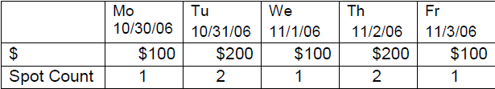
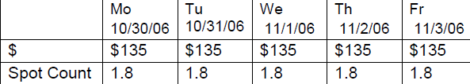

Accrual and Deferral Figures
The Accrual/Deferral report allows finance to accrue revenue for the calendar dates in the next period and defer revenue for the calendar dates of the previous period. The report gathers its information from the orders for Spots, NTR and Rep vehicle spots.
Unique report considerations:
- All revenue is from the ordered contract
- Spot rates are averaged* for weekly spot buys
- If the report selectivity is less than a week, the spot counts may be fractional counts due to averaging the week’s spots
- Daily spot rates are counted where ordered
- All NTR will be placed on the date of the NTR item
- No participant splits are used
- Missed and makegood adjustments are not made, as rates are based on how the line is ordered
- No Fill selectivity, as the number of spots and rates are based on how the line is ordered
Report Rules
Daily Buys
Spots and dollars are distributed to the valid days of the week as defined in the schedule line.
Ex: 1 spot on Mo, We, Fr; and 2 spots on Tu and Th @ $100 each, the distribution is:

An Accrual/Deferral report requested for 10/30/06-10/31/06 will result in $300, 3 spots.
Weekly Buys
Since a partial week can be requested, a calculation has been implemented to distribute spots and dollars evenly across the week. This applies to weekly buys only.
Spots and dollars are averaged and distributed to the valid days of the week as defined in the schedule line.
Ex: 9 spots M-F @ $75 each. Total $ per week: $675 (9 spots X $75), over 5 valid airing days.
Average dollar distribution on each day of the week: $675 / 5 = $135/day.
Average spot distribution on each day of the week: 9 / 5 = 1.8.
